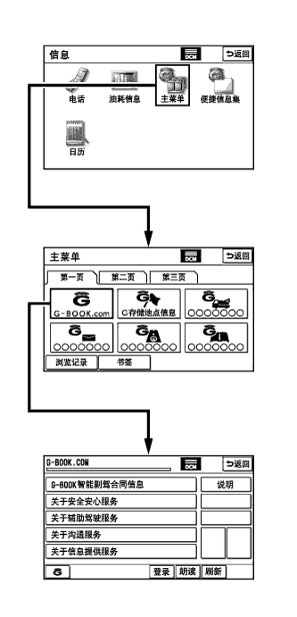

DTC B15E9 Telematics Communication Malfunction |
| DTC Code | DTC Detection Condition | Trouble Area |
| B15E9 | There is a communication processing error. | G-BOOK center |
| 1.CHECK CONNECTION |
|  |
Check the connection to the G-BOOK center.
Press the "INFO/TEL" switch on the display and navigation module display.
Turn the engine switch on (ACC) and wait 1 minute.
Perform the operations shown in the illustration and check that G-BOOK.com is displayed.
| Result | Proceed to |
| G-BOOK.com can be accessed | A |
| G-BOOK.com cannot be accessed | B |
|
| ||||
| A | |
| 2.PERFORM MANUAL MAINTENANCE CHECK |
Perform a manual maintenance check.
Move the vehicle to a communication service area. Wait for a while and perform a manual maintenance check (Click here).
| Result | Proceed to |
| Manual maintenance check does not complete normally | A |
| Manual maintenance check completes normally | B |
|
| ||||
| A | |
| 3.CONTACT G-BOOK SUPPORT CENTER |
Contact the G-BOOK support center.
Contact the G-BOOK support center and inform them about the following:
| NEXT | ||
| ||